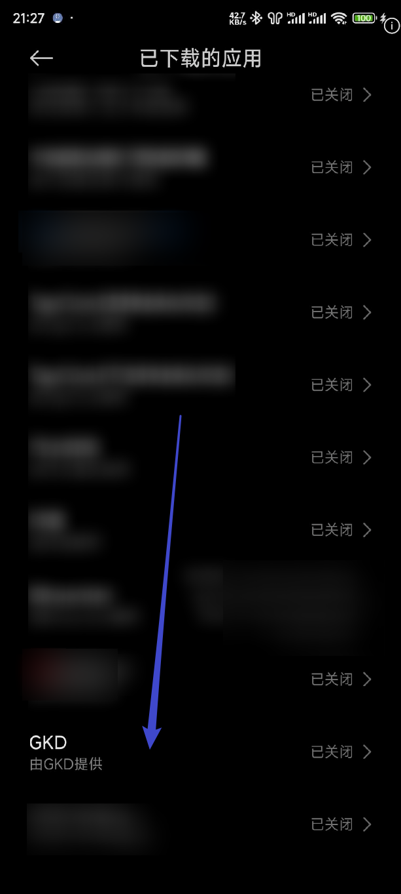
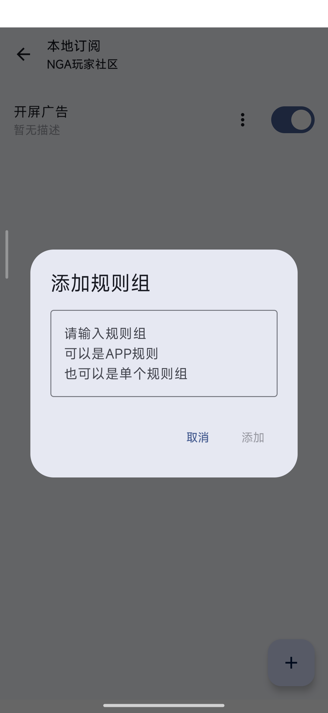

GKD 新手入门：一个能帮你自动跳过开屏广告的小工具
第一次接触 GKD 不知道从哪下手？这篇带你从零装到跑通，五分钟搞定自动跳过广告，连写规则的门槛都帮你铺平了。
这篇能带你从完全不懂 GKD 到用起来，不需要任何 Android 逆向或脚本基础。
它到底是干嘛的？一个生活化类比就明白
想象一下：你每天打开抖音、点外卖、玩个小游戏，几乎每个 app 启动的那三五秒里，都会弹出一张广告图片，右下角藏着一个小小的「跳过」按钮——你得手动点一下才能进主界面。一天下来，这几十次「等 → 点」的动作虽然单次不费事儿，但日积月累就是纯纯的重复劳动。
GKD 就是帮你把这件事自动化的工具。它在后台盯着你的屏幕，一旦检测到某个界面结构符合你预设的「跳过广告」条件，就自动替你点一下那个按钮。不用 ROOT，不用改系统设置，靠的是 Android 自带的无障碍权限——说白了就是让 GKD 获得「观察界面 + 模拟点击」的能力，然后按你给的规则干活。
它能做的远不止跳过开屏广告。只要你能描述「什么样的界面该执行什么样的操作」，它就可以套用规则。社区里有人用它自动关闭游戏的弹窗、有人帮购物 app 点「领券」、甚至有人让它在特定界面自动截屏。但对绝大多数新手来说，核心需求还是那个——跳过开屏广告。
五分钟上手：从装到跑通的最短路径
第一步：下载并安装
先去 GKD 的下载把安装包拿到手，装完打开应用。第一次启动它会弹出无障碍权限的授权引导，跟着走就行。
第二步：给它无障碍权限（关键一步）
这是 GKD 干活的前提。引导流程大概这样：
- GKD 内部弹出一个提示卡片，告诉你接下来要跳转到系统的无障碍设置页
- 点「前往设置」，系统会打开「无障碍」页面，在服务列表里找到 GKD，点进去打开开关
- 系统会弹一个标准的无障碍授权弹窗，确认授予权限
整个过程不用纠结，GKD 的引导做的很清晰，每一步都有说明。授权完成后，回到 GKD 主页，你会看到状态栏里多了一条常驻通知——这说明服务已经跑起来了。

第三步：导入一个订阅（开始享受）
GKD 自己不带规则，规则是通过「订阅」分发的——就是一份 JSON 格式的规则列表，社区里有人维护、有人分享。你可以去 GKD 的官网找一份最新的订阅链接，复制后在 GKD 里添加即可。
导入之后，订阅页会显示一堆规则分类（开屏广告、弹窗广告、通知横幅等等），你不用全开，挑「开屏广告」这一类先开了就行。然后随便打开几个平时广告多的 app，比如抖音、淘宝，观察一下——启动广告的右下角那个「跳过」按钮，是不是自动被点掉了？
到这里你已经完成了 GKD 的最短路径上手。总共不超过五分钟。
上手后先玩这三个功能
跑通基本跳过之后，别急着去写自己的规则——先把 GKD 自带的几个好用的功能摸清楚。
功能一：通知栏的四个快捷磁贴
下拉状态栏，在快捷开关面板里你会发现 GKD 声明了四个磁贴。它们让「开个应用找设置」变成了「下拉一点」的事。
四个分别是：开关无障碍服务的总闸、开关调试用的 HTTP 服务、开关悬浮窗、以及一键抓取当前界面快照。最实用的是第一个和第四个——无障碍服务偶尔会被系统杀掉，下拉点亮就能重启；而快照磁贴是你后面写规则时最趁手的调试工具。
功能二：抓取快照，看看 GKD 眼中的界面长什么样
你可能好奇 GKD 是怎么「看见」屏幕上有什么的。答案就是快照功能——它能把当前界面的无障碍节点结构完整抓下来，存成一份可以审查的文件。
GKD 提供了五种抓快照的方式：悬浮窗点一下、下拉状态栏的磁贴、甚至可以绑到截屏手势上。最顺手的是悬浮窗：在 GKD 的高级设置里打开悬浮窗服务，屏幕上会出现一个可拖动的小按钮，想抓哪个界面就在那个界面上点一下。抓到的快照可以上传到电脑端的审查工具里查看节点层级。

功能三：调整规则的匹配参数（进阶但不吓人）
如果社区的订阅在某个 app 上跳不过去，你可能想自己写一条规则。这时候你需要知道 GKD 的规则引擎是怎么找界面元素的，gkd文档里把这套逻辑讲得很细。
核心叫「选择器」——就是一段描述界面结构的表达式。GKD 内部用的是从右往左匹配的逻辑：FrameLayout > TextView 不是先找父容器再找子文本，而是先找所有 TextView，再验证它们的父容器是不是 FrameLayout。写规则时把最具区分度的条件放最右边，引擎第一步就缩小范围，跑得也最快。
此外，GKD 对满足特定格式的正则做了自动优化——用简单的字符串匹配代替正则引擎，又快又稳。如果你只是想做「忽略大小写的开头/包含/结尾」判断，直接按官方给的格式写就行，不用自己发明复杂正则。
小白最常问的三个疑问
Q1：GKD 耗电吗？
这是官方 FAQ 里回答过的问题，结论很明确：GKD 默认不耗电。耗电的来源是两个东西：你启用了多少条规则，以及当前 app 界面有多少无障碍节点在刷新。
排查方法也很简单：如果耗电榜里 GKD 常驻前列，先检查你是不是订阅规则全开了——包括根本用不到的类别，甚至同时开着几份内容重复的订阅。把订阅精简到一两个活跃的、分类只留核心需求，耗电马上降下来。
另外，像抖音这类节点数量极多、事件刷新频率高的 app，GKD 在里面做匹配工作量天然大。你可以考虑在这些 app 上先关掉不必要的规则组。
Q2：无障碍权限经常掉怎么办？
Android 系统出于安全考虑，有时候会杀掉后台服务，导致无障碍权限被系统自动关闭。GKD 提供了两种授权模式来应对：普通模式下你需要重新去系统设置手动开启；高级授权模式下 GKD 能自行拉起服务，掉了自动恢复。
不管哪种模式，通知栏那个 GKD 快捷磁贴都是你最顺手的手动干预入口——下拉一点就重启，不用再进应用。
Q3：自己写规则难度大吗？
取决于你想达到什么程度。跳过开屏广告这种场景，你只需要描述「屏幕上出现某个 id 的按钮 → 点击它」，非常直白。GKD 的规则编辑器里也有实时预览和错误提示，不会让你瞎猜。
如果要写复杂规则，建议先从审查工具入手：抓一份目标界面的快照，在电脑端的审查工具里看节点树，然后照着节点属性写选择器。官方文档里有完整的语法参考和调优指南，比你想的要清晰。
GKD 背后的社区维护着大量订阅规则，对新手来说够用好几年。如果哪天你发现某个 app 的广告没被跳过了，别急着怪 GKD——大概率是那个 app 改了界面结构，社区的订阅更新还没跟上，手动刷新一下订阅就能解决。想更深一步搞自己的规则了，去翻一下 GKD 的文档，里面从选择器语法到规则参数讲的非常细，进阶空间大着呢。
这份内容我顺手同步到了 GitHub、Gitee、GitCode 三个仓库，不管你在哪个平台上方便访问，选一个顺手的就行。